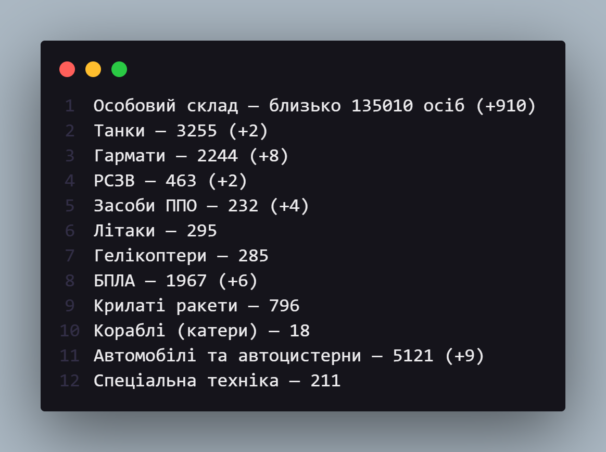

Цей модуль дозволяє вам отримувати інформаію про втрати ворога.
Джерело даних - сайт Міністерства оборони України.
Дані оновлюються щодня, близько 9 години ранку.
Зараз модуль підтримує лише українську мову.

⚠️ Зверніть увагу, що цей сервіс не є офіційним. Ми залишаємо за собою право не нести відповідальність за збої в системі.
⚠️ Ви маєте право використовувати цей модуль в будь-яких цілях. Єдиний вийняток - застосування його для ведення підривної діяльності проти України, що є суворо забороненим.
⚠️ Якщо хочете бачити більше цифр у статистиці - донат сюди.